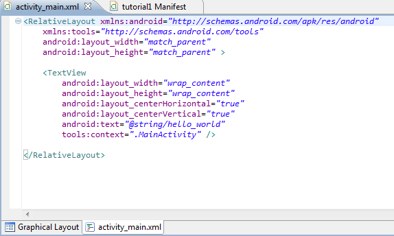
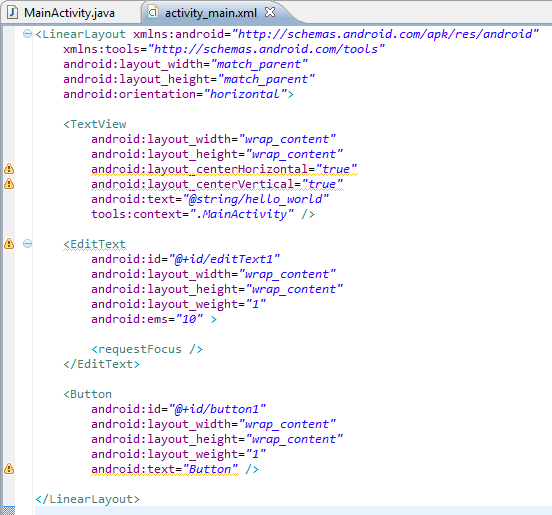
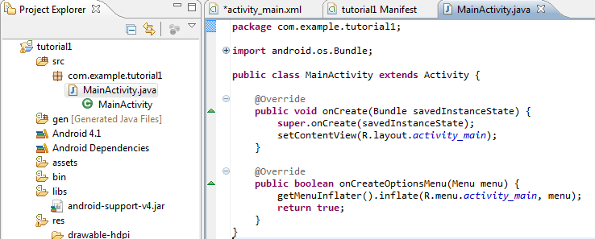
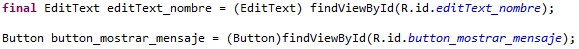
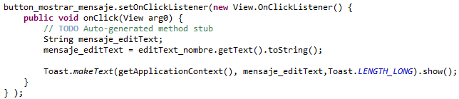

Vamos a crear un proyecto vacío y vamos a explicar que es lo que contiene y algunas cosas básicas que profundizaremos luego.
Antes de programar vamos a crear la parte visual de nuestra actividad, modificando el archivo xml que se creó automáticamente junto a nuestro proyecto en el directorio /res/layout/, en nuestro caso modificaremos nuestra actividad principal que se encuentra en /res/layout/activity_main.xml. Podemos ver la parte gráfica presionando la pestaña “Graphical Layout” y el código de la parte gráfica en la pestañan actividad_main.xml.

Código por defecto de nuestra primera pantalla
Lo primero que vemos es que todo está contenido dentro de la etiqueta “RelativaLayout” el cual es un layout. Los layout son elementos no visibles que permite agrupar y distribuir en el espacio los controles que incluyamos en su interior (algo así como una tabla).Para nuestro ejemplo cambiaremos el RelativeLayout por un LinearLayou (pronto explicaremos más a fondo los tipos de layout y cómo utilizarlos).
Dentro de nuestro LinearLayout incluiremos 3 controles: una etiqueta (TextView), un campo de texto (EditText) y un botón (Button), podemos ir al editor gráfico (Graphical Layout) y arrastrar los controles a nuestro o crearlos directamente desde el código, recomiendo arrastrar los controles desde el apartado gráfico y luego ver el código que se genera (pestaña activity_main.xml).

Podemos ver que cada control tiene sus propiedades, las más importantes son las siguientes:
android:id. Es la ID del control, con la que podremos identificarlo cuando la utilicemos dentro de nuestra actividad.
android:text.
Texto del control. El texto que mostrará el control se puede
utilizar una cadena de texto escrita por nosotros directamente (esto
es poco recomendable) o definidas en los recursos del proyecto
dentro del fichero strings.xml de la carpeta values (esto
es lo más recomendable), en cuyo caso indicaremos su
identificador precedido del prefijo “@string/”.
android:layout_height y android:layout_width. Son las dimensiones del control con respecto al layout que lo contiene. La propiedad “wrap_content” nos sirve para que el control se adapte al contenido del mismo (si observan en la “XXXX” el ancho del botón es solo del porte de su texto, esto se debe a que su ancho utiliza “wrap_content”), o bien “fill_parent” para indicar que el ancho o el alto del control se ajustará al ancho o alto del layout contenedor (es decir, el ancho o alto de un control nunca será mayor al de su Layout contenedor).
Además para los LinearLayout contamos con la propiedad orientation el cual indica de qué manera se mostrarán los controles que son incluidos dentro del LinearLayout, que puede ser vertical u horizontal. En Android 4 y superiores si no indicamos este atributo tomará el valor horizontal por defecto (si no me equivoco en versiones antiguas el valor por defecto es el vertical), en nuestro caso elijaremos vertical para que los 3 controles que hemos incluidos de arriba hacia abajo (de manera vertical).
Vamos
a crear nuestra actividad (Activity) principal, para esto abrimos
nuestra clase principal creada automáticamente por Eclipse
MainActivity.java.

- Metodo onCreate: Es el método por donde inicia automáticamente la actividad cuando es llamada.
- setContentView: Asigna a la vista el contenido del recurso layout (es decir, referencia a la parte gráfica de la actividad).
- R.layout.activity_main: Recurso de layout de la aplicación, en este caso el layout es el archivo activity_main.xml (no hay que escribir la extensión).
- Metodo onCreateOptionsMenu: Permite crear nuestro menú de opciones de cada Actividad, más adelante veremos cómo utilizarlo, por ahora no lo utilizaremos.
Debemos obtener una referencia a los diferentes controles de la interfaz que necesitemos manipular para crear una instancia, en nuestro caso un EditText y un Button. Para ello utilizaremos el método findViewById() indicando el ID de cada control y además debemos indicar de que tipo de objeto es nuestra instancia (EditText para el primero y Button para el segundo).

Obteniendo
a la referencia de nuestros controles
Nuestro EditText queda referenciado con una instancia llamada “editText_nombre” (más adelante explicaremos por que la declaramos como “final”) y el Button como “button_mostrar_mensaje”.
Como queremos enviar un mensaje luego de presionar el botón, debemos captar el evento de presionar el botón, esto se logra con el metodo “OnClick” de la siguiente manera.

Metodo
onClick de un botón
Además dentro del método onClik crearemos un String que guardara nuestro mensaje. Para capturar el mensaje guardaremos el texto de nuestro EditText el cual se obtiene con el método “getText()” y luego la transformamos en un String con el método “toString()”.
Finalmente enviamos el mensaje, esto se puede lograr a través de la clase Toast que nos proporciona Android, los Toast se utilizan de la siguiente manera:
Toast.makeText(Context context, CharSecuence text, int duration)
En donde “context” es el contexto de nuestra aplicación que se puede obtener a través del método getApplicationContext() que nos proporciona Android, “text” es el texto que queremos mostrar y “duration” es cuánto tiempo va a ser mostrado nuestro texto. Adicionalmente podemos agregar la función show() para mostrar el mensaje en pantalla (apenas se lea esa línea de código).